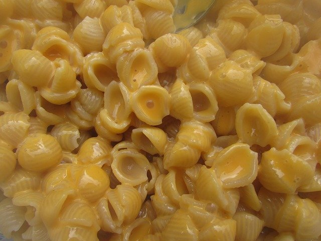

Mac and Cheese
Ingredients
- Box of mac and cheese
- milk
- butter

Directions
- Boil like 8 cups of water
- Put in macaroni noodels
- Cook for about 10 minutes
- Drain water
- Add powdered cheese first add mix
- Spalsh in a tiny bit of milk and a pad of butter
- Mix well
- Enjoy from pan with a side of canned salmon or tuna